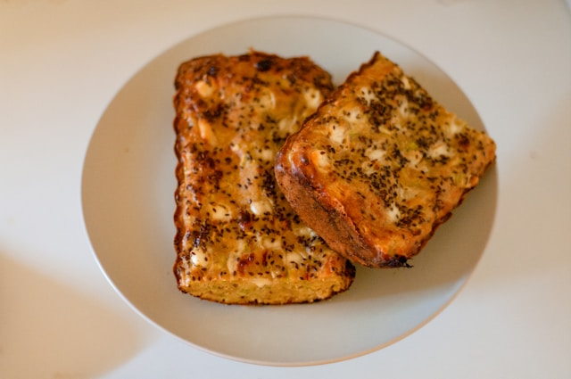

Home
French Toast Casserole

Description
French Toast Casserole is a warm and comforting breakfast dish made with chunks of bread soaked in a sweet, spiced custard and baked until golden.
Ingredients
- 1 loaf of bread, cut into cubes
- 6 eggs
- 2 cups milk
- 1/2 cup sugar
- 1 teaspoon cinnamon
- 1 teaspoon vanilla extract
- Butter for greasing
- Powdered sugar for serving
Steps
- Preheat the oven to 180°C (350°F).
- Grease a baking dish with butter.
- Spread the bread cubes evenly in the dish.
- Whisk eggs, milk, sugar, cinnamon, and vanilla.
- Pour the mixture over the bread.
- Bake for 40-50 minutes until set and golden.
- Serve warm with powdered sugar on top.